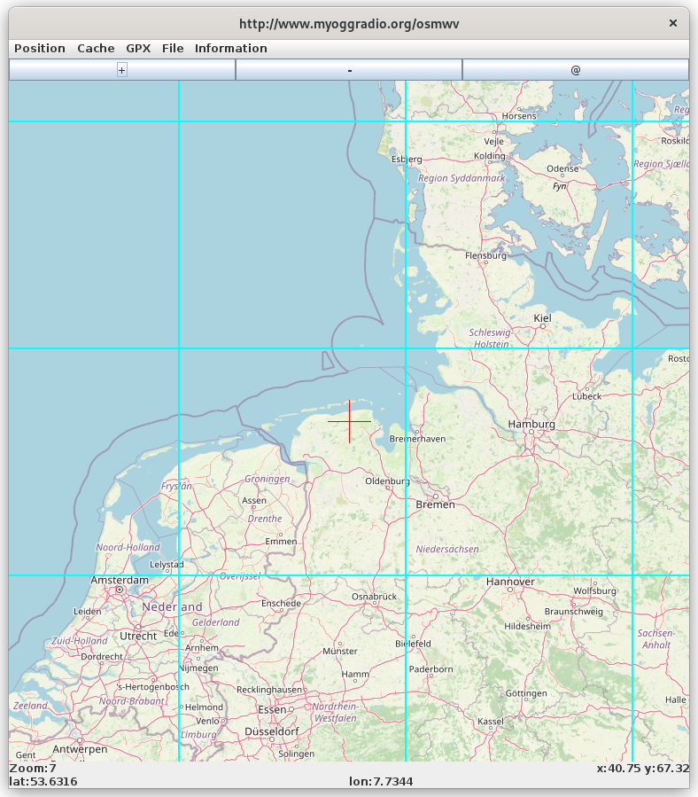

Sie sehen das Einstiegsbild von OSMWV. Es handelt sich um eine Open Street Map Kartendarstellung.
Oben ist ein Menu. Direkt darunter finden sich drei Buttons. Mit + bzw - können Sie die Zoomstufe verändern. Besondere Beachtung verdient der @ Button. Durch drücken desselben extrahiert OSMWV Daten von Open Street Map in der Umgebung des roten Kreuzes und sucht alle eingetragenen Links heraus. Diese werden dann im Browser angezeigt.
Unter der Karte ist die Statusanzeige. Hier wird die aktuelle Zoomstufe angezeigt, sowie die aktuelle Position des roten Kreuzes in der Bildmitte.
Es gibt fünf Menus.
Mit Position können Sie die Position der Karte beinflussen. Einfacher geht es aber durch einen Klick auf die Karte. Der angeklickte Punkt wird zum Kartenmittelpunkt.
Das zweite Menu Cache zeigt Statistiken an woher die einzelnen Kacheln der Karte geladen wurden. OSMWV unterhält einen Festplattencache.
Mit dem GPX Menu können Sie einen GPX Track in der Karte darstellen lassen.
Im File Menu haben Sie mehrere Möglichkeiten. Zum einen können Sie die Position der Karte speichern und wiederherstellen. Desweiteren können Sie den Kartenausschnitt als png speichern.
Information zeigt Ihnen die Version der Software. Oder Sie lassen sich die nächstgelegenen Postleitzahlen anzeigen.
Bemerkungen zur Installation.
Download der Software: git clone https://git.launchpad.net/osmwv
Danach cd osmwv gefolgt von ./osmwv.sh startet die Anwendung
Java in mindestens der Version 8 ist erforderlich.
Bei manchen Installationen muss das Paket libgnomecanvas2-0 installiert werden. Ansonsten funktioniert "desktop.browse(temp.toURI());" nicht. (Der @ Button funktioniert nicht)